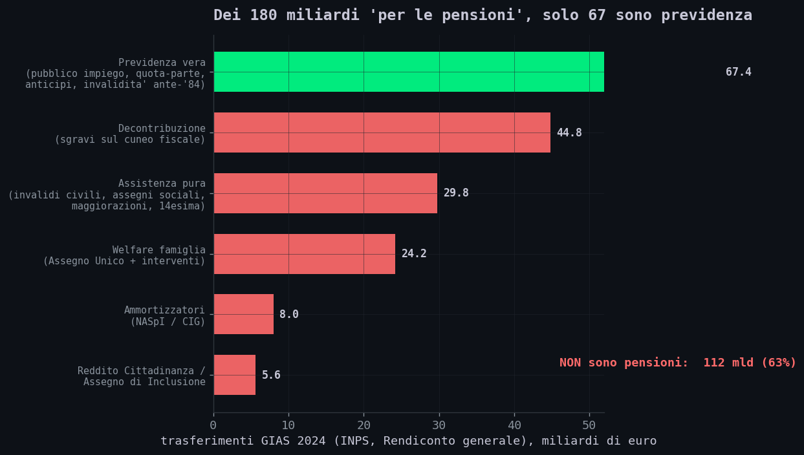
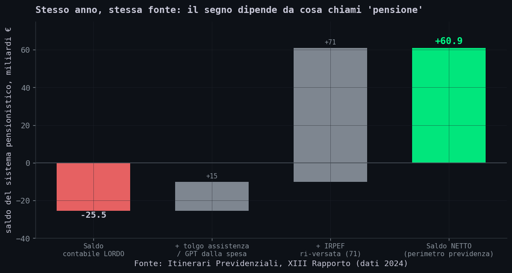
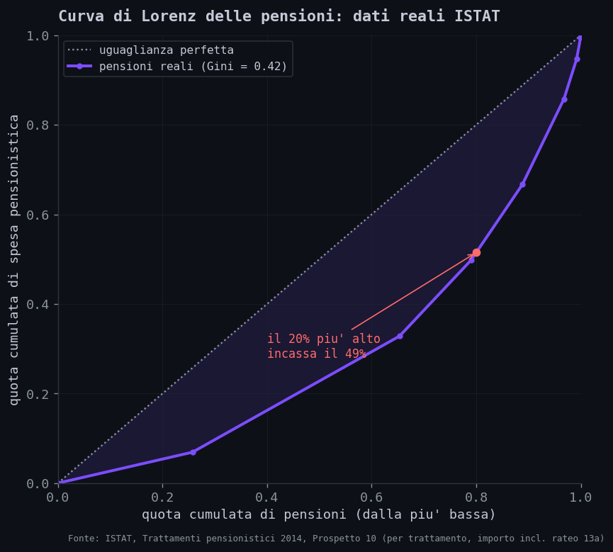
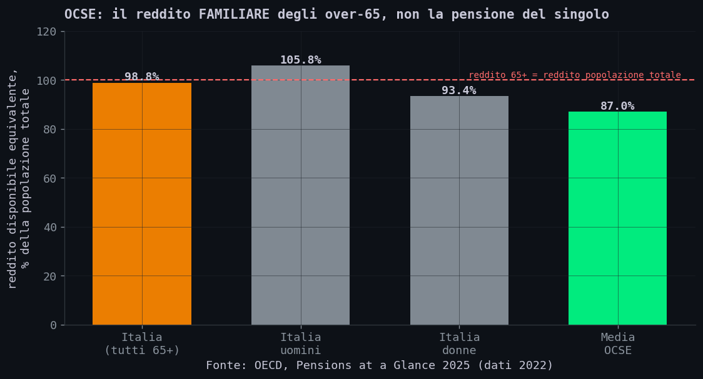
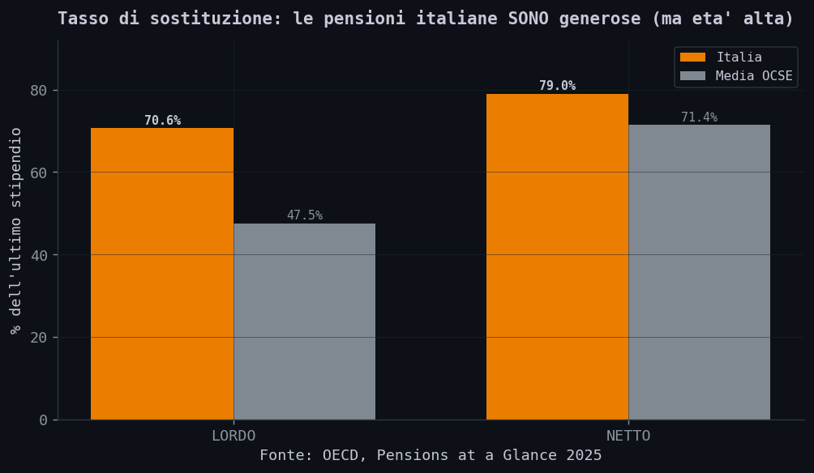
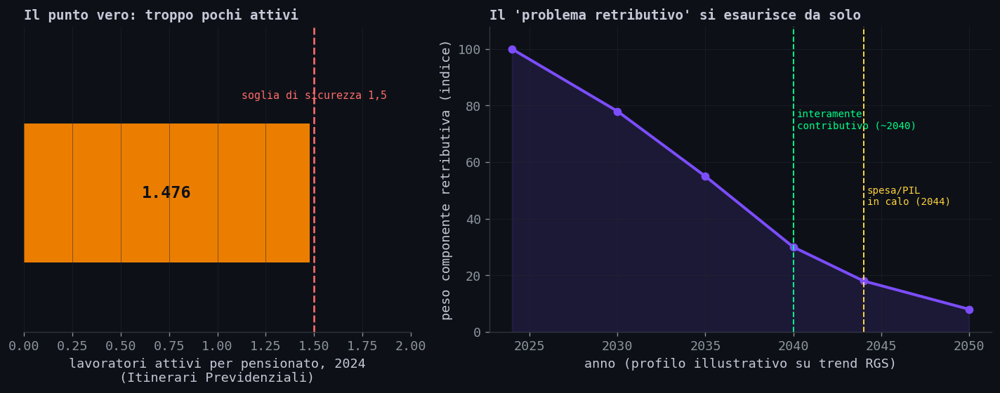
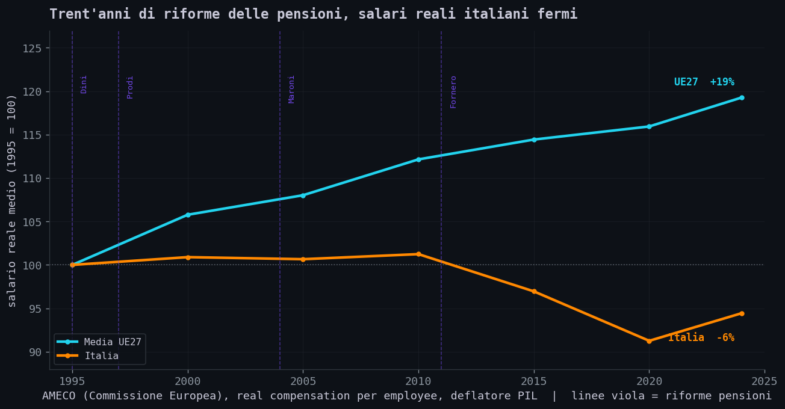
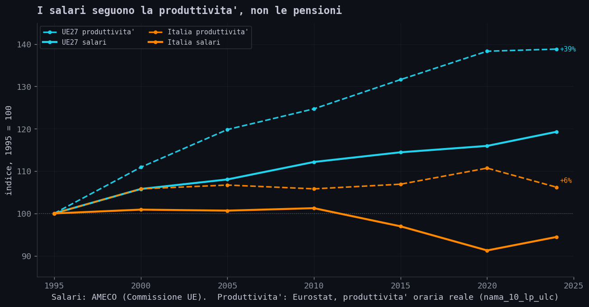
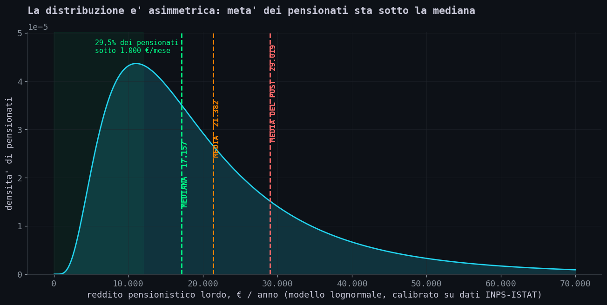
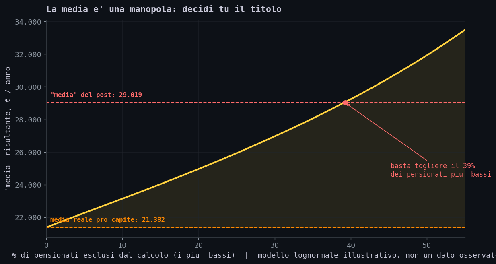

// Il Post
Sezione 00. Una domanda semplice, rimasta senza rispostaMi e' passato davanti su X un post di ORA! (@ora_italia) sulle pensioni. Confezionato bene: cifre precise, fonti istituzionali, tono pacato, e un'immagine forte, un pensionato in sdraio su un masso chiamato "PENSIONI" che schiaccia i "lavoratori italiani". La tesi e' questa:
"Uno Stato giusto non schiaccia chi produce reddito." (testo integrale, clicca per aprire)
Ogni mese i contributi dei lavoratori finanziano le pensioni attuali. Ma i contributi non bastano per sostenere il sistema pensionistico: nel 2024 lo Stato ha trasferito all’INPS circa 180 miliardi (oltre i 300 che ottiene già dalle tasse sul lavoro).
Dove vanno questi soldi?
2 milioni di pensionati percepiscono un reddito totale non superiore a una volta il minimo.
14 milioni di pensionati sono sopra la soglia minima (ogni pensionato percepisce in media 1,4 prestazioni.)
€29.019 lordi è il reddito pensionistico medio, escludendo le pensioni sociali (prive di contribuzione) e gli assegni di reversibilità.
E il resto degli italiani non pensionati?
Secondo i dati OCSE, l’Italia è uno dei pochi Paesi sviluppati dove i pensionati guadagnano in media più dei lavoratori attivi.
Intanto chi lavora: stipendi bassi, precarietà, tasse record sul lavoro.
Chi è davvero fragile va protetto.
Chi in passato ha ottenuto vantaggi irripetibili deve contribuire.
Serve un ricalcolo graduale delle sole pensioni retributive, proporzionato all’importo percepito e al reddito familiare.
Nessun intervento sulle pensioni sotto la soglia di povertà assoluta regionale.
L'impatto è contenuto tra le pensioni medie (~2.100 e ~2.700 €/mese lordi). Progressivo oltre.
Così risparmiamo 6–12 miliardi/anno per abbassare le tasse sul lavoro e da reinvestire in istruzione, welfare e politiche per la famiglia.
Uno stato giusto deve difendere chi lavora oggi e chi lavorerà domani. Serve riequilibrio, ORA!
Una cosa pero' non mi tornava. Tutto il ragionamento parte da un numero, i 180 miliardi che lo Stato versa all'INPS "perche' le pensioni non si pagano da sole". Ma l'INPS non paga solo pensioni: gestisce anche assistenza, invalidita', assegno unico, NASpI, CIG. Cosi' ho fatto una domanda semplice, sotto al post.
Se circa 113 di quei 180 miliardi non sono pensioni, il ragionamento parte gia' dal perimetro sbagliato. Non era una provocazione, era un dubbio concreto. Non ho ricevuto risposta, e cosi' sono andato a cercare direttamente le fonti. Questo e' quello che ho trovato.
I numeri del post, presi uno per uno, sono quasi tutti veri. I 180 miliardi sono nel Rendiconto INPS, i 29.019 euro in un documento di Itinerari Previdenziali, il dato OCSE esiste davvero. Sono cifre vere collocate nel perimetro sbagliato, e questo basta a far dire loro il contrario di quel che sembra. Rimettiamole nel contesto, una alla volta.
Premessa onesta. Questo articolo non difende le "pensioni d'oro" e non sostiene che il sistema italiano sia perfetto, perche' non lo e': la spesa pensionistica e' tra le piu' alte d'Europa e il rapporto tra chi lavora e chi e' in pensione e' sotto la soglia di sicurezza. Resta il fatto che la catena 180 miliardi → pensionati ricchi → tagliamo e' costruita con una tecnica precisa, e quella tecnica si puo' verificare numero per numero.
// L'Effetto Del Perimetro
Sezione 01. Come cambia il risultato quando cambia il perimetroPartiamo dal numero che fa da detonatore a tutto il resto: 180 miliardi. E' vero. Nel 2024 lo Stato ha trasferito all'INPS 180,5 miliardi attraverso la GIAS, la Gestione degli Interventi Assistenziali e di Sostegno (INPS, Rendiconto generale 2024).
Il problema e' la parola "pensioni". La GIAS non e' la cassa delle pensioni, ma l'intero apparato di welfare che passa per i conti dell'INPS. Apriamola.

(37% del totale)
sono pensioni (63%)
sul cuneo fiscale
Unico + famiglia
Solo 67 miliardi su 180 sono previdenza, e gran parte di quei 67 e' il sostegno strutturale alle gestioni del pubblico impiego e ai fondi storicamente in disavanzo, non "le pensioni dei lavoratori privati che non si pagano da sole". Il resto, 112 miliardi, e' altro: assistenza pura (invalidita' civili, assegni sociali), ammortizzatori, reddito di cittadinanza, e soprattutto due voci enormi.
Nota sul metodo. La classificazione segue le voci GIAS del Rendiconto generale INPS 2024. A seconda di dove si traccia il confine, autori diversi possono arrivare a un numero leggermente diverso: il punto non cambia, perche' in ogni caso la quota non pensionistica resta largamente maggioritaria. Lo si vede provando a spostare la stima.
| Se la previdenza vale... | ...la spesa non pensionistica e' | quota non pensioni |
|---|---|---|
| 60 mld | 120 mld | 67% |
| 67 mld (stima) | 113 mld | 63% |
| 80 mld | 100 mld | 56% |
Anche tirando la previdenza fino a 80 miliardi, oltre la meta' dei 180 resta spesa non pensionistica. La conclusione non dipende dalla classificazione esatta: regge anche sbagliando la stima del 20%.
Qui emerge una tensione interna al ragionamento. Il post chiede di tagliare le pensioni per (parole sue) "abbassare le tasse sul lavoro e finanziare politiche per la famiglia". Ma dentro quei 180 miliardi che cita come buco previdenziale ci sono gia':
Il cortocircuito, in numeri. Dentro i 180 miliardi che il post denuncia ci sono gia' 45 miliardi di decontribuzione (cioe' il taglio delle tasse sul lavoro) e 24 miliardi tra Assegno Unico e politiche per la famiglia. Sono 69 miliardi che vanno gia' esattamente dove il post dice di voler spostare risorse tagliando le pensioni.
Etichettare quei 69 miliardi come "spesa pensionistica fuori controllo", e poi proporre di tagliare le pensioni per finanziare le stesse cose, e' un cortocircuito logico. Regge solo finche' nessuno apre il Rendiconto INPS a vedere cosa c'e' dentro l'aggregato.
La tecnica. Si prende un aggregato vero e grande (180 mld), gli si appiccica l'etichetta della parte emotivamente piu' carica ("pensioni") e si nasconde che la maggioranza dell'aggregato e' tutt'altro. E' un errore di perimetro, ed e' la madre di tutte le manipolazioni con i numeri veri.
anche assegno unico, invalidita', NASpI, CIG e
decontribuzioni cambia il risultato. Se oltre 110
miliardi non sono pensioni, il ragionamento parte
gia' dal perimetro sbagliato."
Questo e' il nucleo dell'articolo: regge sui soli documenti (Rendiconto INPS 2024), anche togliendo tutta la parte statistica e la discussione sul saldo.
// Deficit O Surplus?
Sezione 02. "I contributi non bastano": dipende da cosa chiami pensioneIl post dice: "i contributi non bastano". Quanto e' davvero in rosso il sistema pensionistico, una volta tolto il welfare? La risposta dipende dal perimetro, ed e' istruttiva.

Entrate contributive 2024: 260,6 miliardi. Spesa pensionistica IVS: 286,1 miliardi (dati Itinerari Previdenziali, XIII Rapporto). Il saldo contabile lordo e' un deficit di 25,5 miliardi, non 180. E quel deficit e' trainato dalle gestioni del pubblico impiego, non dai lavoratori privati.
Ma c'e' di piu'. Se separi la previdenza dall'assistenza che e' finita dentro la spesa, e sottrai i circa 71 miliardi di IRPEF che i pensionati ri-versano allo Stato ogni anno sulle loro pensioni, lo stesso sistema, nello stesso anno, secondo la stessa fonte, chiude in attivo di 60,9 miliardi.
Quest'ultimo punto vale anche al di la' della stima di Itinerari, perche' e' un principio generale: il costo lordo di una pensione non e' quello che lo Stato sborsa davvero, dato che una parte rientra subito come imposte. Una pensione di 2.500 euro lordi con 500 di IRPEF trattenuta costa all'erario piu' vicino a 2.000 che a 2.500. E' per questo che l'OCSE, accanto alla spesa pensionistica lorda, pubblica anche quella netta, e l'Italia, che tassa le pensioni in misura rilevante, e' tra i Paesi dove la differenza tra le due pesa di piu'. Anche il dato lordo, quindi, sovrastima il costo effettivo.
Anche ignorando del tutto questa stima di Itinerari Previdenziali, il messaggio non cambia: il deficit previdenziale lordo resta nell'ordine dei 25 miliardi, non dei 180 che il post lascia intendere. Il "+60,9" e' soltanto l'estremo opposto dello stesso intervallo, e per la tesi dell'articolo basta il dato lordo.
Trasparenza. Il "+60,9" e' una stima di Itinerari Previdenziali, un centro studi con una tesi precisa ("il sistema regge"), e usa un'IRPEF sulle pensioni che e' essa stessa una stima (il MEF non pubblica quella riga). Lo segnalo apposta. E va detto che non esiste un perimetro unico e universalmente accettato tra previdenza e assistenza: dove tracciare la linea e' materia di dibattito tecnico. Ma il punto regge a prescindere: che il saldo vero sia −25 o +61, in nessuno scenario reale e' il −180 che il post lascia intendere. Il Rendiconto INPS non mostra un deficit previdenziale di 180 miliardi: quella cifra comprende una grande quantita' di spesa assistenziale e di welfare.
// La Media Che Mente
Sezione 03. Statistica: perche' la media e' lo strumento sbagliatoVeniamo al numero piu' subdolo: 29.019 euro lordi di reddito pensionistico medio. Ha due difetti, e per vederli non serve costruire nessun modello: bastano le tabelle dell'INPS.
Primo difetto, statistico. Su una distribuzione cosi' sbilanciata la media non descrive la pensione tipica. La pensione media e' 15.141 euro l'anno, circa 1.164 euro al mese (INPS-ISTAT, importo per prestazione). Ma il 53,5% delle pensioni sta sotto i 750 euro al mese: se piu' della meta' delle prestazioni e' sotto i 750 mentre la media e' 1.164, la pensione mediana e' molto piu' bassa della pensione media. Non e' una stima: e' una conseguenza diretta della distribuzione per classi pubblicata dall'INPS. E guardando alle persone invece che alle prestazioni il quadro non cambia: il 29,5% dei pensionati ha un reddito da pensione sotto i 1.000 euro al mese.
per prestazione (INPS)
sotto 750 €/mese
sotto 1.000 €/mese
(ben sotto la media)
La media e' tirata su dalla coda alta, la minoranza di pensioni elevate: poche pensioni molto grandi spostano il valore medio verso l'alto senza spostare chi sta in mezzo. Usare quella media per dire "i pensionati stanno bene" descrive un livello che la maggioranza delle pensioni non raggiunge.
La concentrazione si vede con la curva di Lorenz, costruita qui sui dati reali ISTAT (distribuzione delle pensioni per classe di importo), non su un modello.

Il 20% di pensioni piu' alte incassa circa il 49% della spesa pensionistica, mentre la meta' piu' bassa si divide il 23% (indice di Gini 0,42). E' questa coda a tenere alta la media: il valore medio somma la pensione bassa della maggioranza al peso di una minoranza elevata. Sono numeri reali, non l'output di un modello.
Secondo difetto, di onesta'. Il 29.019 non e' nemmeno la media reale, che resta 21.382 euro pro capite. E' un valore che la fonte stessa, Itinerari Previdenziali, ottiene escludendo le due classi di reddito piu' basse, "in prevalenza assistenziali". E' un controfattuale legittimo, se dichiarato; diventa fuorviante quando lo si presenta come "il reddito medio". E il post lo descrive pure male: scrive "escludendo le pensioni sociali e gli assegni di reversibilita'", mentre la fonte esclude le due classi piu' basse, non la reversibilita'.
Tutto questo regge senza una riga di modello: la media e' alta perche' include la coda ricca, e il 29.019 e' una media a cui sono stati tolti i poveri. Per chi vuole vedere la forma completa di questa distribuzione, in fondo all'articolo c'e' un esperimento illustrativo con un modello lognormale: serve a rendere intuitivo cio' che i dati ufficiali gia' dicono, non e' una prova, e la tesi di questa sezione vale anche cancellandolo.
La tecnica. Due mosse in una. Primo: usare la media dove la mediana e' l'unica statistica onesta su una distribuzione asimmetrica. Secondo: costruire un controfattuale ("escludendo X") scegliendo X per massimizzare il numero. Entrambe danno l'impressione di pensioni generose, mentre piu' della meta' delle pensioni sta sotto i 750 euro al mese.
// "Guadagnano Piu' Dei Lavoratori"
Sezione 04. La lettura forte di un indicatore deboleIl claim a effetto: "secondo l'OCSE i pensionati italiani guadagnano in media piu' dei lavoratori attivi". L'indicatore esiste davvero (OECD, Pensions at a Glance 2025, dati 2022). Ma misura una cosa diversa da quella che il post gli fa dire.

L'indicatore e' il reddito disponibile equivalente degli over-65 come percentuale di quello della popolazione totale. Per l'Italia vale 98,8% (media OCSE 87%), tra i piu' alti dei Paesi sviluppati. Sembra dare ragione al post. Non e' cosi', per tre motivi tecnici:
- E' reddito familiare equivalente, non la pensione del singolo. I nuclei degli over-65 sono piu' piccoli: la scala di equivalenza li avvantaggia in modo meccanico.
- Include tutte le fonti: redditi da capitale, immobili, lavoro residuo, e i redditi degli altri componenti del nucleo. Non e' "la pensione".
- E' al netto di imposte e contributi: il lavoratore paga contributi pesanti che escono dal "disponibile", il pensionato no.
| Cosa misura l'indicatore OCSE | Cosa NON misura |
|---|---|
| Reddito disponibile equivalente | La pensione individuale |
| Il nucleo familiare | Il singolo pensionato |
| Tutti i redditi (lavoro, capitale, immobili) | La sola pensione |
E soprattutto: il rapporto e' alto anche perche' il denominatore e' basso. I giovani italiani guadagnano poco: salari fermi, precarieta', disoccupazione giovanile. L'indicatore non dice "i pensionati sono ricchi": dice "i giovani stanno peggio della media OCSE". Confondere le due cose e' invertire causa ed effetto.
Detto questo, un fondo di verita' c'e', e l'onesta' impone di mostrarlo. Le pensioni italiane sono generose rispetto all'ultimo stipendio:

Il tasso di sostituzione lordo italiano e' 70,6% contro il 47,5% della media OCSE: prendi in pensione il 70% dell'ultimo stipendio, contro il 47% altrove. E' un fatto. Ma il prezzo e' un'eta' di pensionamento alta (67 anni oggi, verso i 71 per i nuovi entranti). Non e' un pasto gratis: e' un sistema che paga bene chi ci arriva, e ci si arriva tardi.
La tecnica. Prendere un indicatore reale ma tecnico (reddito familiare equivalente) e darne la lettura forte ("pensionati > lavoratori") che l'indicatore non supporta. L'autorevolezza della fonte ("secondo l'OCSE") viene prestata a un'affermazione che la fonte non fa.
// Il Risparmio Fantasma
Sezione 05. 6-12 miliardi: da dove? E la Costituzione?La proposta operativa: ricalcolare col metodo contributivo le pensioni retributive, "risparmiando 6-12 miliardi l'anno". Tre problemi, in ordine crescente di gravita'.
Primo: la cifra non e' documentata. Non esiste una stima ufficiale di 6-12 miliardi annui dal ricalcolo di tutte le retributive in essere. La sola stima seria mai prodotta (il piano Boeri del 2015) parlava di circa 4 miliardi, e fu contestata e mai adottata. Il "6-12" e' un numero senza paternita'.
Secondo: la Costituzione. La Corte Costituzionale ha gia' bocciato piu' volte i tagli retroattivi sulle pensioni in essere:
| Sentenza | Cosa ha stabilito |
|---|---|
| 116/2013 | Illegittimo il prelievo sui soli pensionati: e' un tributo discriminatorio (artt. 3 e 53) |
| 70/2015 | Illegittimo il blocco della perequazione: viola proporzionalita', adeguatezza e legittimo affidamento |
| 173/2016 | Contributo di solidarieta' ammesso, ma solo su pensioni > ~90.000 €/anno e per max 3 anni |
| 234/2020 | Raffreddamento ammesso, ma durata massima ~3 anni: oltre e' illegittimo |
La giurisprudenza e' chiara: sono ammessi solo contributi temporanei (massimo 3 anni), progressivi, sulle pensioni molto alte. Un ricalcolo generalizzato e permanente delle retributive avrebbe un rischio di incostituzionalita' altissimo. Il "risparmio strutturale" promesso e' giuridicamente fragile.
Terzo: il problema si risolve da solo. La componente retributiva si riduce ogni anno per via del pro-rata. Il sistema diventa interamente contributivo per i nuovi pensionati intorno al 2040, e la spesa pensionistica in rapporto al PIL inizia a calare dal 2044 (RGS, Tendenze di medio-lungo periodo 2024).

Il "tesoretto" dei tagli alle retributive e' in gran parte un patrimonio in esaurimento naturale: tra vent'anni quel problema non c'e' piu', con o senza intervento.
// Dove Il Post Ha Ragione
Sezione 06. La demografia e' un problema veroSarebbe disonesto rovesciare la propaganda del post con la propaganda opposta. Quindi diciamolo: il nodo che il post tocca, l'equilibrio tra generazioni, e' reale.
Il grafico a sinistra qui sopra lo mostra: nel 2024 ci sono 1,48 lavoratori attivi per ogni pensionato, sotto la soglia di sicurezza di 1,5. Sono 24,1 milioni di occupati contro 16,3 milioni di pensionati (e quasi 18 milioni di trattamenti). I salari bassi e la precarieta' dei giovani sono un problema, e si', serve riequilibrio.
Ma la diagnosi del post ("le pensioni si mangiano 180 miliardi") e la cura ("tagliare le retributive") non seguono da qui. Se il problema sono pochi contributori, la leva e' farne crescere il numero e il reddito: salari, occupazione, natalita'. Non ridurre le prestazioni a chi ha gia' versato per quarant'anni sotto le regole di allora.
// E Se Il Problema Fossero I Salari?
Sezione 07. Ribaltare la causa: il dato anomalo non sono le pensioniC'e' una domanda che il post non si pone mai. Se le pensioni fossero la causa principale dell'impoverimento dei lavoratori, allora quando il sistema era piu' generoso i lavoratori avrebbero dovuto stare peggio. E' accaduto l'opposto.
Negli anni Sessanta, Settanta e Ottanta il sistema era molto piu' retributivo di oggi, si andava in pensione prima e la spesa previdenziale era meno contenuta. Nello stesso periodo i salari reali crescevano, il potere d'acquisto aumentava, e spesso una famiglia viveva con un solo stipendio.
Dal 1992 l'Italia ha incassato in fila le riforme Amato, Dini, Prodi, Maroni e Fornero: le pensioni sono diventate via via meno generose e sempre piu' contributive. La tesi del post si puo' allora mettere alla prova come un'ipotesi qualsiasi, con una previsione osservabile.
Previsione: taglio delle pensioni → salari piu' alti
Verifica su cinque riforme (Amato, Dini, Prodi, Maroni, Fornero). Esito atteso: salari in risalita. Esito osservato: salari fermi.
I dati dicono il contrario. Usando i numeri AMECO della Commissione Europea (retribuzione reale per occupato) e fissando il 1995 a 100, da allora il salario reale medio in Italia e' sceso intorno a 94, mentre la media UE27 e' salita a circa 119: una forbice di circa venticinque punti. L'Italia e' l'unico Paese dell'Unione Europea in cui i salari reali sono oggi piu' bassi rispetto a trent'anni fa.

Le linee verticali segnano le riforme delle pensioni: cinque in trent'anni (Amato e' del 1992, prima dell'inizio del grafico). Le pensioni sono state riviste piu' e piu' volte, i salari reali sono rimasti fermi. La stagnazione dei salari reali, non le pensioni, e' il vero fenomeno anomalo italiano. (AMECO, deflatore del PIL; con il deflatore dei consumi la caduta italiana e' ancora maggiore. La serie UE27 parte dal 1995, da cui la base comune 1995 = 100.)
Dal 1992 l'Italia ha fatto cinque grandi riforme pensionistiche. Se le pensioni fossero la causa principale dei salari bassi, i salari avrebbero dovuto reagire. Non e' successo.
Una precisazione, per non cadere nello stesso errore del post. Questo non prova che le pensioni non abbiano alcun effetto sui salari. Nello stesso trentennio sono cambiate molte altre cose, dalla globalizzazione alla tecnologia, dalla struttura industriale all'ingresso nell'euro alla produttivita' stessa: il confronto e' suggestivo, non una prova causale definitiva. Resta pero' che la previsione empirica piu' ovvia della tesi del post, cioe' salari piu' alti dopo le riforme, non trova conferma nei dati. Quando la conseguenza attesa di un'ipotesi non si vede in trent'anni, l'ipotesi non e' un buon candidato come causa principale.
Questo rimette in prospettiva il dato OCSE citato nel post. Che i redditi degli over-65 siano vicini a quelli della popolazione si puo' leggere in due modi: i pensionati sono troppo ricchi, oppure i lavoratori italiani sono troppo poveri. Il post sceglie la prima lettura senza mai mostrare perche' la seconda sarebbe sbagliata, ed e' la seconda ad avere alle spalle trent'anni di salari fermi.
E se non sono le pensioni, allora cos'e'? La spiegazione piu' solida e' la produttivita'. Nel lungo periodo i salari reali seguono la produttivita' del lavoro, e quella italiana e' ferma quanto i salari.

Dal 1995 la produttivita' oraria reale italiana e' cresciuta di circa il 6% (Eurostat), contro il +39% della media UE27. Dove la produttivita' e' salita, i salari sono saliti; dove e' rimasta ferma, come in Italia, sono rimasti fermi. Le pensioni non compaiono in questa relazione. (Produttivita': Eurostat, prodotto reale per ora lavorata; il picco italiano del 2020 e' un effetto di composizione dovuto al crollo delle ore lavorate durante il Covid.)
La domanda da farsi. Tagliare le pensioni e' la risposta a un problema che i numeri collocano altrove. Se il nodo e' che i salari italiani sono fermi dal 1990, spostare risorse dai pensionati ai lavoratori senza toccare la dinamica salariale sposta il problema da una generazione all'altra, e la causa resta dov'e'.
// Anatomia Dello Scalpore
Sezione 08. Le sette tecniche, tutte in un post soloMettiamo da parte le pensioni e guardiamo la struttura. Questo post e' un manuale di come si fabbrica indignazione usando solo numeri veri. Le metto in fila una per una, perche' riconoscerle qui aiuta a riconoscerle ovunque.
| Tecnica | Come funziona | Nel post |
|---|---|---|
| Errore di perimetro | Etichetti un aggregato grande con il nome della sua parte piu' emotiva | 180 mld di welfare chiamati "pensioni" (lo sono per 67) |
| Media su coda asimmetrica | Usi la media dove la mediana e' l'unica onesta | "29.019" mentre oltre meta' delle pensioni sta sotto 750 €/mese |
| Controfattuale su misura | Escludi le classi "scomode" finche' il numero non ti piace | Si escludono le classi piu' basse per gonfiare la media |
| Lettura forte | Dai a un indicatore tecnico un significato che non ha | Reddito familiare 65+ → "pensionati > lavoratori" |
| Autorevolezza prestata | "Secondo l'OCSE..." per coprire un'affermazione che l'OCSE non fa | L'OCSE misura il reddito relativo, non confronta i singoli |
| Numero senza paternita' | Una cifra precisa che sembra studiata ma non ha fonte | "6-12 miliardi" di risparmio: nessuna stima ufficiale |
| Cornice morale preventiva | "Chi e' fragile va protetto" disarma in anticipo le obiezioni | Si taglia "solo" il ceto medio, che e' la maggioranza |
Nessuna di queste e' una bugia. Sono distorsioni di contesto. Ed e' proprio per questo che funzionano: chi le riceve verifica un numero a caso, lo trova vero, e si fida di tutto il resto. La verifica del singolo dato e' la trappola. Quello che conta e' il perimetro, la statistica giusta, la lettura corretta.
// Il Verdetto, Riga Per Riga
Sezione 09. Cosa e' vero, cosa e' fuorviante, cosa e' falso| Affermazione del post | Verdetto | Perche' |
|---|---|---|
| Lo Stato versa ~180 mld all'INPS | VERO MA FUORVIANTE | Trasferimenti GIAS: ~67 mld classificati come previdenza, il resto assistenza e welfare |
| Servono a coprire le pensioni | FUORVIANTE | Una parte e' previdenza, ma il grosso e' assistenza; il deficit previdenziale e' ~25 mld, non 180 |
| Reddito medio 29.019 € (escl. reversibilita') | NUMERO OK, USO NO | Media a cui sono tolte le 2 classi piu' basse; e non e' la reversibilita' |
| OCSE: pensionati > lavoratori attivi | FUORVIANTE | Indicatore di reddito familiare equivalente, non pensione-vs-stipendio |
| Pensioni generose (tasso di sostituzione) | VERO | 70,6% lordo vs 47,5% OCSE, ma a fronte di eta' alta |
| Risparmio 6-12 mld/anno dal ricalcolo | NON DOCUMENTATO | Nessuna stima ufficiale; Boeri ~4 mld; vincoli della Corte Cost. |
| Serve riequilibrio tra generazioni | VERO | Rapporto attivi/pensionati 1,48 sotto la soglia 1,5 |
// Appendice: Un Esperimento Illustrativo
Modello, non provaAvvertenza. Quanto segue e' un modello che ho costruito io per visualizzare la forma della distribuzione dei redditi pensionistici. Non e' una fonte e non e' la prova di niente: la tesi dell'articolo (mediana molto sotto la media, e il perimetro dei 180 miliardi) regge sui dati ufficiali, senza questo modello. Lo includo perche' rende intuitivo cio' che le tabelle INPS dicono in modo arido. Chi vuole, puo' saltarlo.
Ho preso una lognormale, la forma tipica dei redditi, e l'ho calibrata su due ancore ufficiali: la media pro capite (21.382 euro/anno) e il fatto che il 29,5% dei pensionati prende meno di 1.000 euro al mese. Risolvendo per i due parametri:
P(reddito < 12.000) = Φ((ln 12.000 − μ)/σ) = 0,295
→ μ = 9,75 σ = 0,66 → mediana del modello = exp(μ) ≈ 17.157 €

La forma e' asimmetrica a destra: una grande massa di pensioni basse, una coda lunga di pensioni alte. Nel modello la mediana (17.157) cade circa 4.200 euro sotto la media (21.382), e poco piu' del 60% dei pensionati resta sotto la media. Sono numeri del modello, coerenti con i dati ufficiali ma non sostituibili a essi.
La concentrazione vera (curva di Lorenz e indice di Gini) e' nel testo principale, alla Sezione 03, perche' la' e' costruita sui dati reali ISTAT e non su questo modello.

Ultimo esperimento, il piu' istruttivo: la media condizionata E[X | X > soglia] al crescere della frazione di pensionati esclusi dal basso. Nel modello illustrativo occorre escludere circa il 39% dei pensionati piu' poveri per ottenere una media di quell'ordine (intorno a 29.000). E' la versione quantitativa del punto gia' visto coi dati ufficiali: il 29.019 e' una media a cui sono stati tolti i poveri. Quel 39% dipende dall'ipotesi lognormale adottata e non va interpretato come ricostruzione esatta della distribuzione reale.
// Fonti e Codice
Sezione 10. Tutto verificabileOgni numero viene da una fonte istituzionale o da un centro studi, sempre indicato come tale. Il codice che genera i grafici e calcola la statistica e' uno script Python di ~230 righe: numpy, matplotlib, e NormalDist della libreria standard. Niente scipy, niente dati proprietari.
| Dato | Valore | Fonte |
|---|---|---|
| Trasferimenti GIAS 2024 | 180,5 mld | INPS, Rendiconto generale 2024 |
| Saldo previdenziale e IRPEF | −25,5 / +60,9 mld; 71 mld | Itinerari Previdenziali, XIII Rapporto |
| Spesa pensionistica % PIL | 15,6% (allargata) | RGS, Tendenze di medio-lungo periodo (2024) |
| Pensionati sotto 1.000 €/mese | 29,5% | INPS-ISTAT, Osservatorio sulle pensioni |
| Reddito medio pro capite / "29.019" | 21.382 € / 29.019 € | Itinerari Previdenziali |
| Reddito relativo over-65 | 98,8% (IT) vs 87% (OCSE) | OECD, Pensions at a Glance 2025 (nota Italia) |
| Tasso di sostituzione | 70,6% lordo / 79,0% netto | OECD, Pensions at a Glance 2025 |
| Salari reali dal 1990 | Italia ai livelli del 1990 (unica nell'UE in calo) | OECD, Average wages |
| Salario reale per occupato (graf.) | 1995=100: Italia ~94, UE27 ~119 | AMECO (Commissione UE) RWCDV, via DBnomics |
| Distribuzione pensioni per classe (Lorenz, Gini 0,42) | top 20% = 49% della spesa | ISTAT, Trattamenti pensionistici 2014, Prospetto 10 |
| Produttivita' oraria reale | 1995=100: Italia ~106, UE27 ~139 | Eurostat nama_10_lp_ulc (RLPR_HW) |
| Rapporto attivi/pensionati | 1,4758 | Itinerari Previdenziali |
| Vincoli su tagli retroattivi | 116/2013, 70/2015, 173/2016, 234/2020 | Corte Costituzionale (giurcost.org) |
| Esaurimento retributivo / spesa PIL | contributivo ~2040, calo dal 2044 | RGS, Tendenze di medio-lungo periodo (2024) |
// Conclusione
Fine trasmissioneTorniamo al post di @ora_italia, quello confezionato bene, con le fonti e il tono pacato.
Il meccanismo e' piu' sottile di una bugia: prende fatti veri e li rimonta in un ordine che porta a una conclusione falsa. I 180 miliardi esistono, ma sono in larga parte welfare. I 29.019 euro vengono da un documento serio, e restano comunque una media gonfiata dalla coda alta, con oltre la meta' delle pensioni sotto i 750 euro al mese. Il dato OCSE e' autentico, e misura il reddito di una famiglia, che e' cosa diversa dalla pensione di una persona. Il risparmio di 6-12 miliardi, invece, non ha alcuna fonte, e gran parte dei risparmi ipotizzati si scontra con i limiti posti dalla Corte Costituzionale e con il progressivo esaurimento naturale della componente retributiva.
Il problema esiste, la demografia e i salari dei giovani, e va affrontato. La leva pero' sta dal lato di chi i contributi li versa: salari, lavoro, natalita'. Tagliare le pensioni e chiamarlo equita', appoggiandosi a numeri veri usati nel perimetro sbagliato, e' un'altra cosa, e i dati non la indicano.
E c'e' una questione di scala che il post non affronta. Anche accettando integralmente la sua diagnosi, il risparmio ipotizzato, 6-12 miliardi, vale circa lo 0,3-0,5% del PIL. Per attribuire a un intervento di quella dimensione trent'anni di stagnazione salariale bisognerebbe dimostrare che possa incidere su un fenomeno di scala enormemente piu' grande. Quella dimostrazione non c'e'.
E c'e' una prova del nove che riassume tutto. Se davvero il problema fosse stato causato dalle pensioni retributive, trent'anni di riforme pensionistiche avrebbero dovuto produrre salari piu' alti. E' accaduto il contrario.
costruita interamente con numeri veri,
tenuti fuori dal loro contesto."
Dati: INPS, Itinerari Previdenziali, RGS, ISTAT, OCSE, Corte Costituzionale. Tutto pubblico, tutto riproducibile.